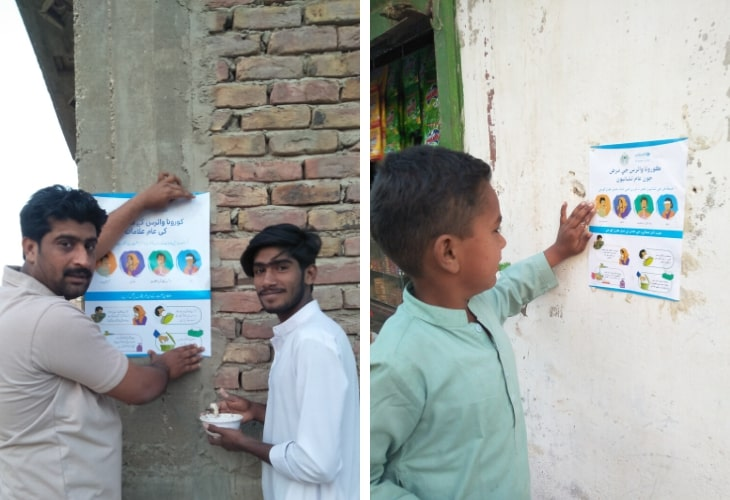
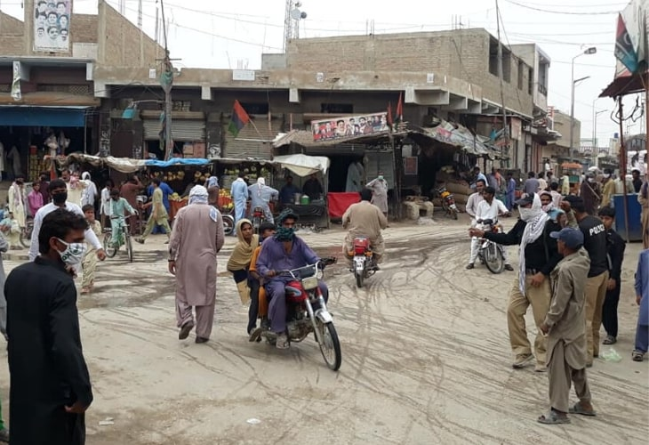
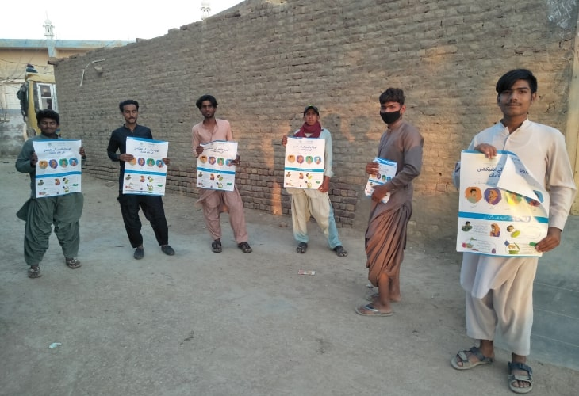

I am 32 years old Pakistani, this is going to be the first-ever lockdown in my life. I've never witnessed such a situation since my birth, it is quite alarming but indeed very much important. I’ve observed a curfew when Benazir Bhutto, ex-Prime Minister was assassinated in 2007, in that time movement was restricted but we were free in our village, playing cricket, having social gatherings. This is a completely new experience, here we are only safe in our home.
Current situation in Pakistan
We have three types of hazards right now in Pakistan, the one itself COVID-19 outbreak, the second inflation and hunger due to lockdown situation, and third, which is most critical, is the attitude of the people towards COVID-19 response. I am in favour of all decisions of the Sindh Government, it is for us, to protect us, to protect Sindh, Pakistan and world. I'm also a citizen, a husband and a father, I must act.
My community attitude
I live in village Jan Mohammad, a well-populated village in Hyderabad Rural. The situation in the village is critical since the nearby building has been declared a quarantine centre. Being a social and health worker I am worried for my people, though the lockdown was announced, villagers are out of their homes, not taking care of any single precaution. Shaking hands, not maintaining social distance, youngsters playing outdoor games, and elderly having gatherings, no one is taking COVID-19 seriously. They traditionally deal with the situation, going to the mosque, praying and maintaining their rituals. A scientific response to avoid an outbreak is missing due to lack of knowledge and resources.
Hand Hygiene Promotion
With the support of local administration, few volunteers distributed door to door soaps for the members of our community, teaching how to properly wash hands and explaining why this is crucial in the fight with COVID-19. For all of them, it was a mission to not only spread the awareness of the pandemic at the community level but primarily save the lives of our friends and families.
We were on a good path, until ...
Sessions with Tabligi Visitors
Tablighi visitors come regularly to the villages to remind people to stay on God's path. They pray together with inhabitants in the mosques and preach them. This year is no different, as usual, after the general meeting in Raiwind, which is considered as a hotspot for coronavirus, they went on the mission in the whole country intending to reach every village. Together with the message of God, they spread the novel coronavirus. Tablighi visitors tested positive for COVID-19 in Raiwind and then in Hyderabad Noor Masjid, where 106 out of 204 were infected with the novel virus. Despite the fact they spread the virus, they continued their visits to our community. The number of infected people was growing in our city day by day, concerned for our lives and lives of our children, together with my elder brother Maqbool Mallah, who is also social worker, we stand to aware our community.
Our first step was to conduct meetings with Tablighi visitors and request them to restrict their movement in the village until we are free of COVID-19. The Tablighi brothers understood and stopped their visit in village streets. The next day another group of Tablighi visitors arrived at the village, and villagers were accompanying them to listen to their preachings. At that point, we understood the only way to stop the spread is to educate the community. You can easily imagine how challenging it can be to influence religion and tradition. Tablighi bring a message from God, they teach how to live by following God's wish and by praying with people they calm them and assure about the right path to follow. When, if not now, people seek support, empathy and assurance at most. In the hierarchical society, the only way to make a change at the bottom level of the community is to respect the authority figures. We reached out to key persons of the village and individually discussed the importance of immediate actions. At the same time, replicating Italy's and China's response, we looked for the support of district administration and the police personals to ensured that the movement of Tablighis visitors is restricted.
Information, Education and Communication Material Display
Our next step was to engage the youth of the village, who were initially taking COVID-19 non-serious at all. Various activities such as displaying UNICEF supported IEC materials in the village, made them part of the campaign. Previously ignoring the situation, now being ambassadors, they put posters at every corner of the village so people can read the precautions and apply.
We spread the information also on social media using WhatsApp and Facebook. Three active young persons including Mr Sarang Mallah, Mr Abrar Halepoto, Mr, Safiullah Panhwar administrate the social groups with more than 120 members of the village including some influencers and mostly young users. They share positive videos about hygiene, spread reliable information about the virus, support each other and are the first contact point for the families in need.
Children’s contribution to the cause
Nirmal, my daughter, who is 5 years old, fully supports us in the campaign. She quickly understood why we are doing so and never requested to go out even to a shop. She is happy inside the home and also asked other children in her video messages to stay at home, wash hands properly and maintain social distance to kill COVID-19. Her cousin 6 years old Kainat also joins her in sharing some of the positive messages from their end.

Stay home, be an example
In our village, we gave the rest of the people an example by staying at home. Our children are playing games inside, watching cartoons and are engaged in other activities along with the elderly. We do it to protect ourselves but also to spread awareness. Our neighbours who observe our home which is locked and friends whom we ask to not visit us at this time may follow and stay home to save their families.
The lockdown and hunger
The lockdown, which contributes to slowing down the coronavirus spread, causes also problems. Thousands of people on daily wages lost their sole source of income. For many families, this time will be more difficult than ever. Together with the support of philanthropists, we distributed 60 Rashan Bags among the neediest families until the government package is announced and reached. We all shall look around and help those in our neighbourhoods who seek help.
I wish one day, soon, all human beings will be saved from COVID-19 and we will look back and smile to the message of this pandemic: stay divided but remain united.